Maplet 사용 설명서
Maplet은 브라우저에서 바로 쓰는 마인드맵 편집기입니다. 계정 없이 이 기기에서 편집하고
.maplet 파일로 내려받으며, 원하면 Google Drive에 자동 저장할 수 있습니다.
MindMup .mup, Markdown, OPML 파일도 열 수 있습니다.
공식 지원 브라우저는 데스크톱 Google Chrome입니다. 아래 화면은 실제 앱에서 자동으로 캡처했습니다.
1. 시작하기
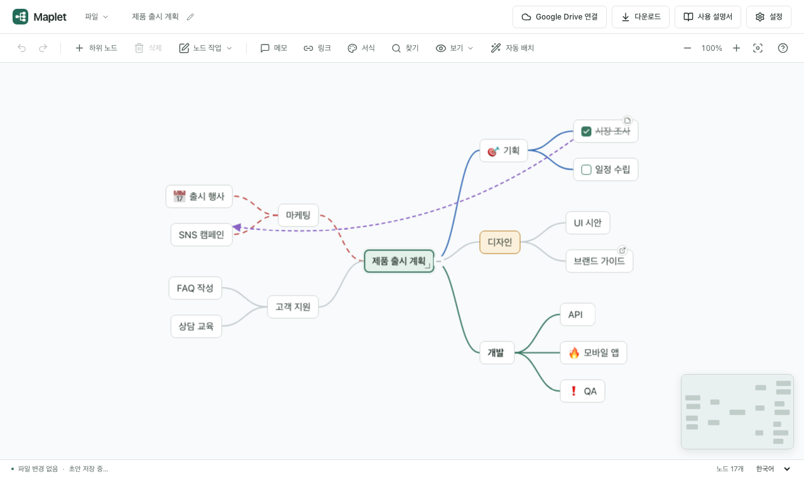
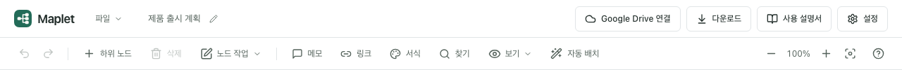
- 헤더
- 파일 메뉴, 파일 이름(눌러서 변경), Google Drive 상태, 다운로드, 설정이 있습니다.
- 도구 모음
- 실행 취소·다시 실행, 하위 노드, 삭제, 노드 작업 메뉴, 메모·링크·서식·찾기, 보기 메뉴, 자동 배치, 확대·축소·화면 맞추기, 단축키 도움말(?).
- 캔버스
- 맵을 그리는 영역입니다. 빈 곳을 끌면 화면이 움직이고, Ctrl+휠이나 핀치로 확대합니다. 오른쪽 아래 미니맵으로 전체 위치를 봅니다.
- 상태 표시줄
- 저장 상태, 초안 보관 상태, 선택 개수, 노드 수, 언어 선택이 있습니다.
처음 열면 “중심 주제” 하나가 있습니다. 노드를 선택하고 바로 입력을 시작하세요. 이전에 편집하던 내용이 있으면 초안 복구 창이 뜹니다. 초안은 탭마다 따로 보관되며, 다른 탭에서 편집 중인 초안은 제안하지 않습니다.
2. 노드 만들기와 편집
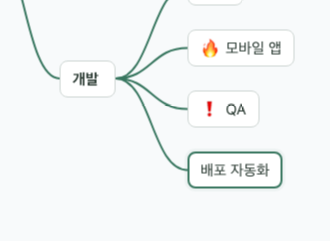
- Tab 선택한 노드 아래에 하위 노드를 만들고 제목 입력을 시작합니다.
- Enter 같은 부모 아래에 형제 노드를 만듭니다.
- F2 또는 더블클릭으로 제목을 고칩니다.
- 입력 중 Enter는 적용, Shift+Enter는 줄바꿈, Esc는 취소, Tab은 적용 후 하위 노드를 이어 만듭니다.
- Delete로 노드와 하위 노드를 지웁니다. 하위가 있으면 확인합니다.
- 방향키로 노드 사이를 오가고, Alt+↑/↓로 형제 순서를 바꿉니다.
- 모든 변경은 Ctrl/⌘+Z로 되돌리고 Ctrl/⌘+Shift+Z로 다시 실행합니다.
노드 오른쪽 아래 모서리를 좌우로 끌면 너비가 바뀌고, 더블클릭하면 자동 크기로 돌아갑니다. 가지의 −/+ 단추로 접고 펼칩니다.
4. 여러 노드 선택
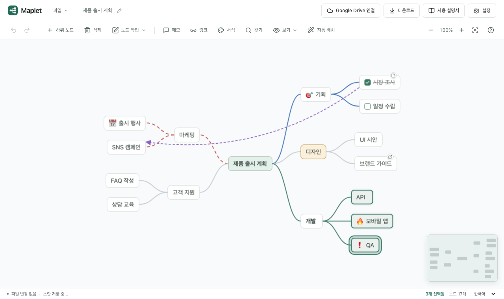
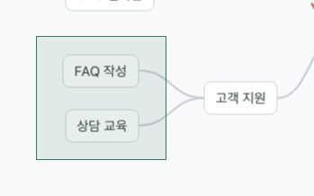
- Shift 또는 Ctrl/⌘를 누른 채 클릭해 노드를 더하거나 뺍니다.
- 빈 곳에서 Shift+드래그하면 사각형 안의 노드를 고릅니다.
- Shift+방향키로 선택을 넓히고, Ctrl/⌘+A로 보이는 노드를 모두 고릅니다.
- 삭제·복사·잘라내기·복제·노드 이동·좌우 배치·서식은 선택한 노드 전체에 한 번에 적용되고, 실행 취소도 한 번이면 됩니다.
- 선택한 노드 하나를 끌면 묶음 전체가 함께 움직입니다.
- Esc나 빈 곳 클릭으로 한 노드 선택으로 돌아갑니다.
5. 드래그로 옮기기
노드를 끌면 하위 노드가 모두 함께 움직입니다. 끄는 동안 나머지 맵은 그대로 있고, 놓을 위치에 따라 결과가 달라집니다. 화면 아래 안내 문구가 현재 모드를 알려 줍니다.
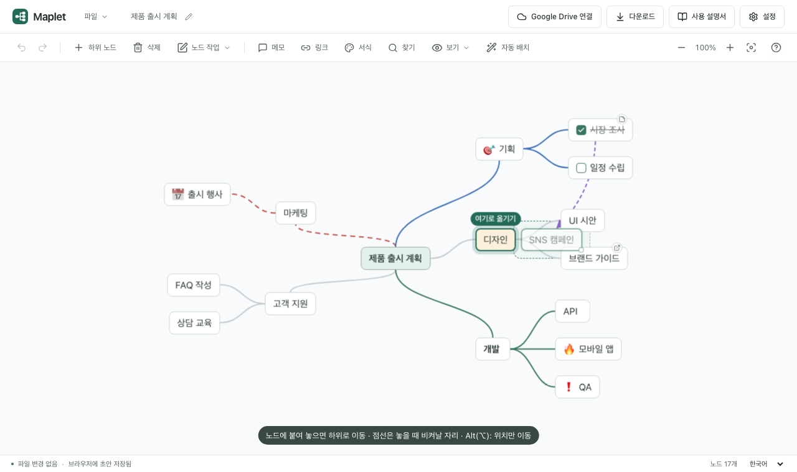
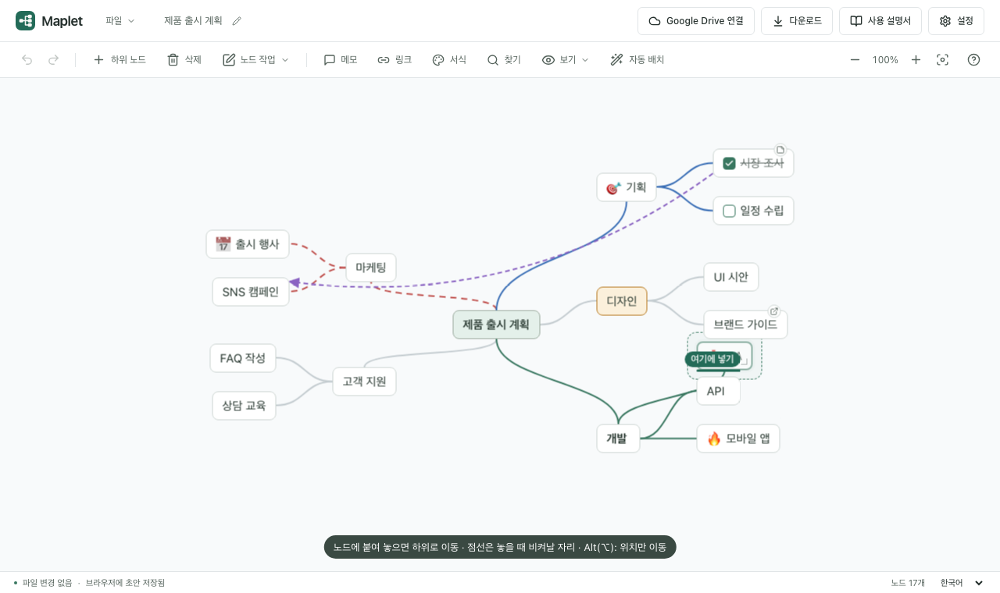
| 놓는 위치 | 결과 |
|---|---|
| 다른 노드 옆이나 위(16px 안) | 그 노드의 마지막 하위로 이동. 중심 주제에 놓으면 놓은 쪽(왼쪽/오른쪽)에 붙습니다. |
| 노드의 바로 위·아래 | 그 노드의 앞·뒤 형제로 넣기. 같은 부모면 순서만 바뀝니다. |
| 빈 곳 | 위치만 옮깁니다. 겹치는 가지가 비켜날 자리는 점선으로 보여 주고 놓을 때 옮깁니다. |
| Alt(⌥)를 누른 채 | 부모를 바꾸지 않고 위치만 옮깁니다. 주변 가지는 실시간으로 비켜납니다. |
끄는 중 Esc를 누르면 처음 자리로 돌아갑니다. 놓은 결과는 실행 취소 한 번으로 되돌릴 수 있습니다. 전체를 다시 정리하려면 도구 모음의 자동 배치를 누르세요.
6. 서식과 표시
노드 메뉴나 도구 모음의 서식을 엽니다. 여러 노드를 골랐다면 바꾼 항목만 모두에 적용됩니다.
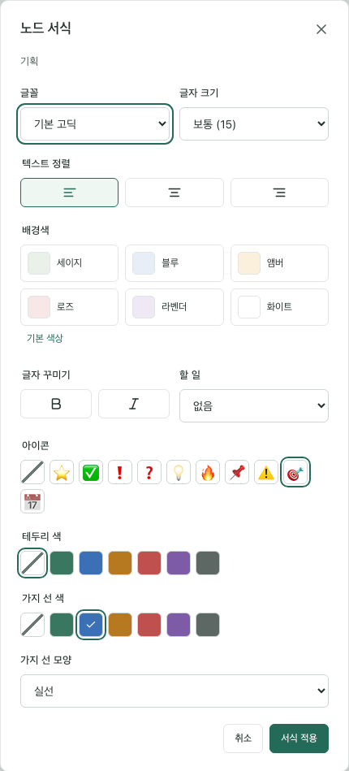
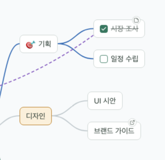
- 글꼴·글자 크기·정렬: 기본 고딕·명조·고정폭, 작게·보통·크게, 세 가지 정렬.
- 배경색: 밝은 6색. 어두운 테마에서도 글자가 잘 보입니다.
- 굵게·기울임
- 할 일: 제목 앞에 체크 상자를 둡니다. 노드에서 바로 눌러 완료하면 제목에 취소선이 그어집니다.
- 아이콘: ⭐ ✅ ❗ ❓ 💡 🔥 📌 ⚠️ 🎯 📅 중 하나.
- 테두리 색, 가지 선 색·모양(실선·파선·점선): 가지 선 설정은 하위 가지로 이어집니다.
7. 메모·링크·연결선
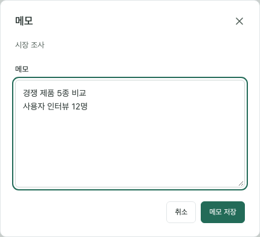
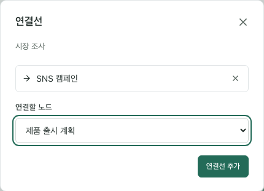
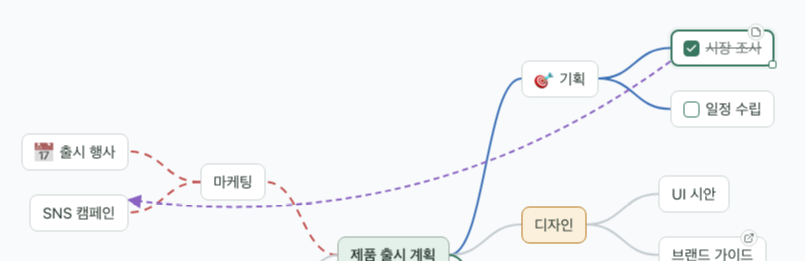
- 메모가 있으면 노드 위에 작은 문서 배지가 생기고, 마우스를 올리면 내용이 보입니다.
-
링크에는
http,https,mailto주소만 쓸 수 있습니다. 링크 배지를 누르면 새 탭에서 열립니다. - 연결선은 연결선 대화상자에서 지우거나, 이어진 노드를 지우면 함께 사라집니다.
8. 찾기
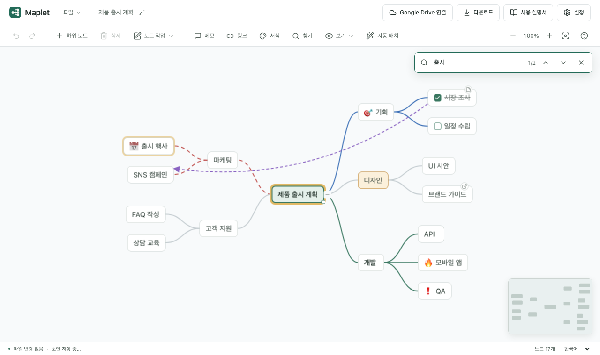
Ctrl/⌘+F 또는 도구 모음의 찾기로 엽니다. 제목에서 찾으며, Enter는 다음, Shift+Enter는 이전 결과로 이동합니다. 접힌 가지 안의 결과로 가면 자동으로 펼칩니다. Esc로 닫습니다.
9. 보기: 펼침 단계·가지 집중·미니맵
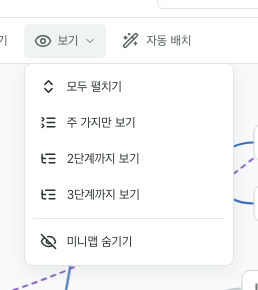
- 모두 펼치기: 접힌 가지를 모두 엽니다.
- 주 가지만 보기, 2·3단계까지 보기: 큰 맵의 윤곽을 빠르게 봅니다.
- 노드 메뉴의 하위 모두 펼치기는 그 가지 안만 펼칩니다.
- 미니맵 보기·숨기기: 선택은 이 기기에 기억됩니다.
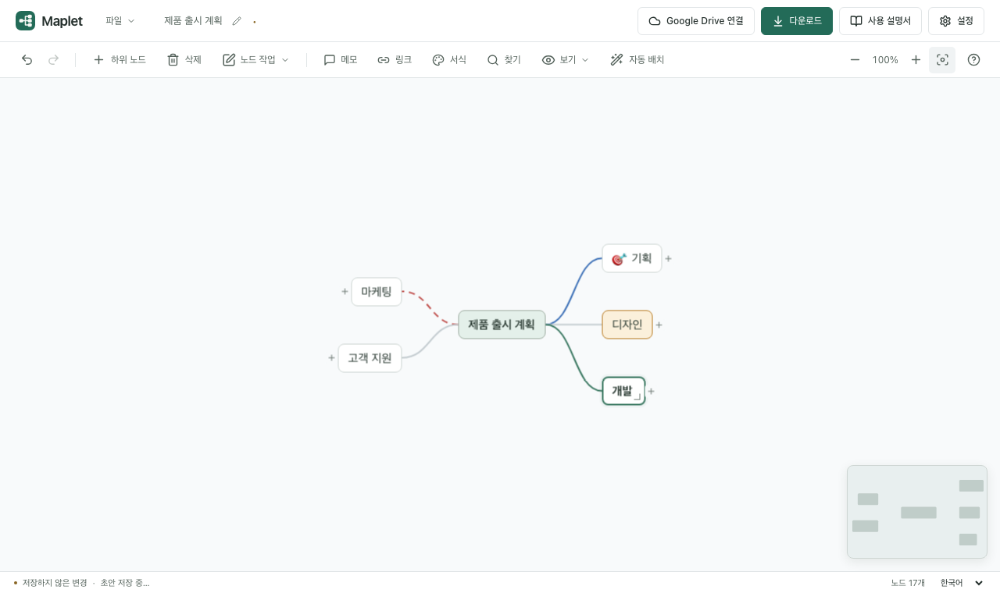
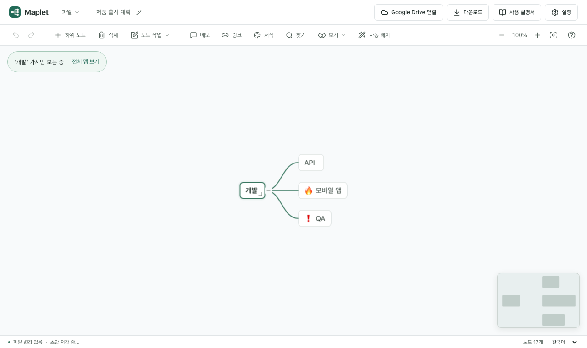
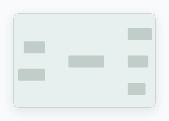
미니맵은 맵 전체와 지금 보는 영역(녹색 사각형)을 보여 줍니다. 누르거나 끌면 그 위치로 화면이 이동합니다. 드래그 중과 좁은 화면에서는 숨겨집니다.
10. 파일 열기·저장·내보내기
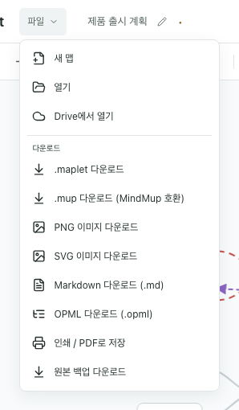
- 새 맵: 지금 탭에 작업 중인 맵이 있으면 새 탭에서 만들고, 비어 있으면 그 자리에서 만듭니다. Drive 저장 폴더와 연결은 새 탭에서도 이어집니다.
-
열기:
.maplet, MindMup.mup, Markdown.md, OPML.opml, 들여쓰기.txt. 파일을 창에 끌어 놓아도 열립니다. -
다운로드(헤더 단추, Ctrl/⌘+S):
.maplet파일로 저장합니다. 좌표·서식·메모·연결선이 모두 들어갑니다. - .mup 다운로드: MindMup에서 열 수 있는 호환 파일.
- PNG·SVG 이미지: 지금 보이는 맵을 이미지로 저장합니다.
- Markdown·OPML: 다른 노트·개요 앱으로 옮길 때 씁니다. 계층·메모·링크만 담깁니다.
- 인쇄 / PDF로 저장: 인쇄 창에서 “PDF로 저장”을 고르면 PDF가 됩니다.
- 원본 백업: 가져온 MindMup 파일을 손대지 않은 그대로 내려받습니다.
편집 내용은 이 브라우저에 초안으로 자동 보관되어 창을 닫았다 열어도 복구할 수 있습니다. 공용 컴퓨터라면 설정에서 초안 보관을 끄세요.
11. Google Drive
배포에 Google 연결이 설정되어 있으면 헤더에 Drive 단추가 나타납니다. 연결 후 저장 폴더를 고르면 편집을 멈추고 몇 초 뒤 자동으로 저장합니다.
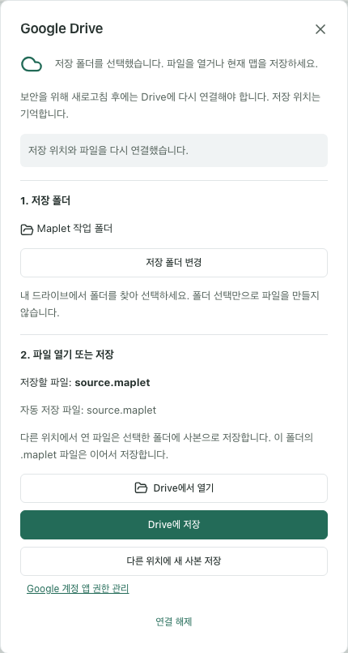
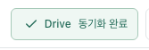
- 헤더의 Google Drive 연결을 눌러 로그인합니다.
- 저장 폴더를 고릅니다. 폴더만 고를 때는 파일을 만들지 않습니다.
- Drive에서 열기로 파일을 열거나 Drive에 저장으로 지금 맵을 저장합니다.
- 이후 편집은 자동 저장되고, 헤더에 편집 중·저장 대기·동기화 완료가 표시됩니다.
다른 곳에서 같은 파일이 바뀌면 겹치지 않는 변경은 자동으로 합치고, 충돌한 항목은 어느 쪽을 남길지 묻습니다. 보안을 위해 새로고침 후에는 다시 연결해야 하지만 저장 위치는 기억합니다.
12. 설정·테마·언어
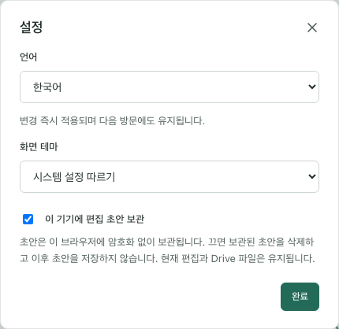
- 언어: 한국어·English. 상태 표시줄에서도 바꿀 수 있습니다.
- 화면 테마: 시스템 설정 따르기·밝게·어둡게.
- 이 기기에 편집 초안 보관: 끄면 보관된 초안을 지우고 더 저장하지 않습니다.
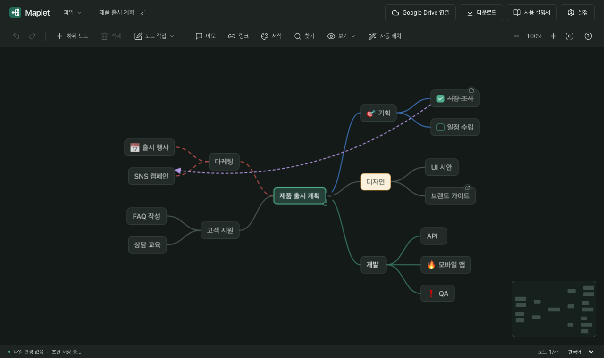
13. 단축키
도구 모음의 ? 단추나 ? 키로 앱에서도 볼 수 있습니다.
| 키 | 동작 |
|---|---|
| Tab / Enter | 하위 / 형제 노드 추가 |
| F2, 더블클릭 | 제목 편집 |
| 방향키 | 노드 사이 이동 |
| Delete | 노드와 하위 노드 삭제 |
| Ctrl/⌘+Z / Shift+Z | 실행 취소 / 다시 실행 |
| Ctrl/⌘+S | Drive에 저장 / 파일 다운로드 |
| Ctrl/⌘+C X V D | 복사 · 잘라내기 · 붙여넣기 · 복제 |
| Alt+↑/↓ | 형제 순서 변경 |
| Ctrl/⌘+F | 찾기 |
| Ctrl/⌘+A | 보이는 노드 모두 선택 |
| Shift/Ctrl/⌘+클릭 | 선택에 추가·제외 |
| Shift+방향키 / 빈 곳 드래그 | 선택 넓히기 / 영역 선택 |
| Esc | 드래그 취소, 여러 노드 선택 해제 |
| 우클릭, Shift+F10 | 노드 메뉴 · 빈 곳은 맵 메뉴 |
| Alt(⌥)+드래그 | 위치만 옮기기 |
| Space+드래그 | 캔버스 이동 |
| Ctrl/⌘++ − 0 | 확대 · 축소 · 화면에 맞추기 |
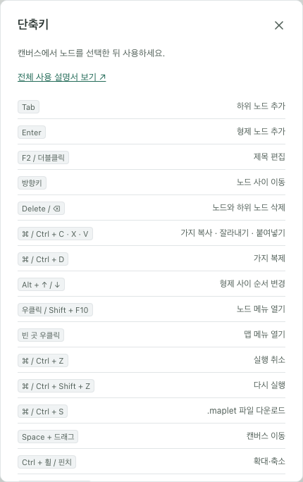
14. 자주 묻는 질문
편집한 내용은 어디에 저장되나요?
편집하는 동안 이 브라우저에 초안으로 보관됩니다. 다른 기기나 브라우저로 옮기려면
다운로드로 .maplet 파일을 저장하거나 Google Drive에 저장하세요.
노드를 다른 노드 옆에 놓고 싶은데 자꾸 하위로 들어가요.
Alt(맥은 ⌥)를 누른 채 끌면 부모를 바꾸지 않고 위치만 옮깁니다. 이미 들어갔다면 Ctrl/⌘+Z로 되돌리세요.
맵이 복잡하게 겹쳤어요.
도구 모음의 자동 배치를 누르면 가지 크기에 맞춰 전체를 다시 정리합니다. 실행 취소 한 번으로 이전 배치로 돌아갑니다.
MindMup 파일을 고쳐서 다시 MindMup에서 쓰고 싶어요.
파일 → .mup 다운로드로 호환 파일을 받으세요. Maplet 전용 배치 정보는 다른 편집기에서 다르게 보일 수 있으며, 원본은 원본 백업 다운로드로 언제든 받을 수 있습니다.
새로고침했더니 Drive 연결이 풀렸어요.
보안을 위해 인증 정보는 저장하지 않습니다. 헤더의 다시 연결을 누르면 기억해 둔 폴더와 파일로 이어서 저장합니다.